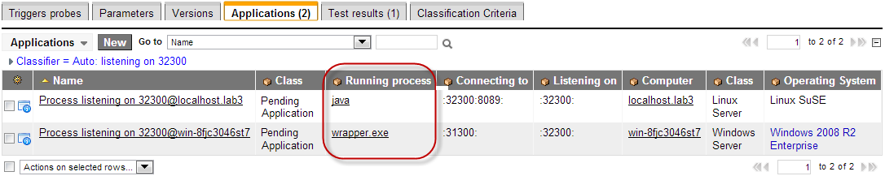

Process Classifications
| |
Note: This article applies to Fuji and earlier releases. For more current information, see Discovery Process Classification at http://docs.servicenow.com
The ServiceNow Wiki is no longer being updated. Visit http://docs.servicenow.com for the latest product documentation. |
Contents
1 Overview
Process classification in Discovery tracks services, such as database servers, running on computer CIs in your instance. Discovery classifies processes during the exploration phase, after identifying devices in the Computer [cmdb_ci_computer] table and its extensions. Like device classification, process classification has its own classification criteria and also has the ability to launch probes. Unlike device classification, process classification creates child configuration items (CI) with Runs on::Runs relationships. By default, Discovery includes classifications for most common processes.
For information on how Discovery creates and maintains dependent relationships between CIs, including processes, see Application Dependency Mapping.
2 When Process Classification Runs
Process classification is unique to computer CIs from the Computer [cmdb_ci_computer] table and its extensions. When Discovery identifies a computer CI, it triggers an active processes probe to explore the computer CI further. Discovery compares the results of the active processes probe to the process classification conditions to determine if there is a match.
{kind=link}
3 Process Classification Workflow
{kind=link}
Discovery compares the data from the active processes probe to the classification criteria. If a process matches the classification criteria, Discovery determines whether to run the process handler script. The process handler script modifies the parameter data to help Discovery identify whether the process represents an existing or new application CI. Every time Discovery adds or updates an application CI, it also determines the application dependency mapping of the application CI to other CIs in the CMDB.
If a process does not match any existing classification criteria, Discovery checks if the process is communicating with other processes (Dublin). If the process communicates with other processes, Discovery automatically generates both a new process classification and application CI from the process name and the list of the other processes it communicates with. After Discovery is complete, review these automatically generated records to determine whether you want to define a new application class for this process.
This feature has been significantly revised for the Dublin release. If you are using an older release, see previous version information.
3.1 Workflow Prior to the Dublin Release
| View process classification workflow on versions prior to the Dublin release |
|---|
|
Prior to Dublin, Discovery would not check whether a process communicated with other processes. If a process failed to match to an existing classification criteria, Discovery ignored classifying the process. Discovery administrators had to define all classification criteria prior to Discovery in order to create an application CI from process data. |
{kind=link}
4 Creating a Process Classification
A process classification allows Discovery to create a particular CI type from information gathered during the identification and exploration phases. When a process matches the classification criteria, Discovery uses the process classification record to create a CI. You can also have Discovery update existing CIs or ignore certain processes by creating a process handler. This feature has been significantly revised for the Dublin release. If you are using an older release, see previous version information.
- Navigate to Discovery Definition > CI Classification > Process.
- Click New.
- Enter the classification fields (see table).
- Right-click the header bar and click Save.
- Enter items from related lists.
- Click Update.
ServiceNow provides the following fields for classifications.
| Field | Input Value |
|---|---|
| Table | Select the table where this classification generates CI records. This table must be an extension of the Computer [cmdb_ci_computer] table such as Applications [cmdb_ci_appl]. |
| Relation type | Select the CI relationship type for this classification. The relationship field is only available for Process and Scan Application classifications. Discovery process classifications typically use one of these relationship types:
|
| Active | Select this option to enable the process classification record. Only active process classifications can create application CI records. |
| Order | Enter the order in which Discovery should run this process classification when there are multiple classifications available for a table. Discovery runs process classifications from the lowest to highest order. |
| Test with | Lists the host CI where an automatically generated process classification conditions were met. Use this field to test changes to the process classification to ensure that the updated classification behaves as expected (Dublin release). |
| Condition | Use the condition builder to create the match and classification criteria for the process classification. This field replaces both the Match criteria field and Classification Criteria related list. The upgrade process converts all existing classification criteria into conditions (Dublin release). |
| On classification script | Enter a script to run when the condition and classification criteria are met. Use this script to perform any special tasks after a device is classified. It is possible to use the g_probe_parameters hashmap from within a classification script to set probe parameters for any configured, triggered probes. For example, this code sets a 'node_port' parameter to 16001 for all triggered probes.
g_probe_parameters['node_port'] = 16001;
See Available Script Objects for additional script options. |
| Triggers probes | Select the exploration probes you want Discovery to launch. These probes gather detailed information about a classified CI. Discovery will not launch these probes if it is configured to stop after classification. See Probes for more information. |
| Applications | Use this related list to view the application CIs that match this process classification (Dublin release). |
| Test Results | Use this related list to view the how Discovery classifies processes on the Test with host and build better classification conditions (Dublin release). |
| Parameters | Use this related list to view the parameters associated with this process and build better classification conditions (Dublin release). |
| Versions | Use this related list to view previous versions of the process classification record (Dublin release). |
{kind=link}
4.1 Available Script Objects
An On classification script can call the following script objects to further customize an application record.
- current: points to a JavaScript object with its [property:value] pair to update the application record. (It is not an actual GlideRecord object of the application.)
- g_sensor: points to the running process sensor class. This object contains a deviceGR object, which points to the computer CI record on which the process resides.
- g_classification: points to the process classifier record itself.
- name: points to the process name.
- command: points to the process command.
- parameters: points to the process parameters.
- g_probe_parameters: a JavaScript object that will allow parameter passing to the triggered probes.
4.1.1 Changing the Default Application Name
By default, ServiceNow names applications in this format:
- <name of the process classifer>@<the name of the computer CI where the process resides>;
For example, for a MySQL server running on a computer called machineA, ServiceNow names the application, mysql@machineA.
You can use the On classification script field to change the default application name to match your business needs.
For example, the following script changes the default application name to include a suffix after the process classifier:
var computerName = g_sensor.deviceGR.name;
var processClassiferName = g_classification.name;
current.name = processClassiferName + "999" + "@" + computerName;
In this example, the name of the application record becomes mysql999@machineA.
Another common technique is to set the application name based on the name, command, and parameter variables. For example, an Eclipse process might have the following values in these variables:
- name => "eclipse"
- command => "/glide/eclipse/Eclipse.app/Contents/MacOS/eclipse"
- parameter => "-psn_0_1884620"
If an Eclipse application runs on a computer called machineA, ServiceNow names the application, eclipse@machineA. The following script appends the parameter value as part of the application name.
var computerName = g_sensor.deviceGR.name;
var processClassiferName = g_classification.name;
current.name = processClassiferName + parameters + "@" + computerName;
In this example, the name of the application record becomes eclipse-psn_0_1884620@machineA.
4.1.2 Passing Values to Probes
Sometimes it is useful to pass values to the triggered probes in the process classification. You can do this by creating a custom script that defines a name/value pair for the g_probe_parameters object. For example:
g_probe_parameters['processCommand'] = command;
In this example, when a classification record triggers a probe, the script passes the probe a parameter called processCommand with the value of the command variable.
4.2 Classification Prior to the Dublin Release
This feature has been significantly revised for the Dublin release. If you are using an older release, see previous version information.
| View process classification on versions prior to the Dublin release | ||||||||||||||||
|---|---|---|---|---|---|---|---|---|---|---|---|---|---|---|---|---|
|
Process classification in previous releases required:
To create a process classification:
4.2.1 Process Classification FieldsServiceNow provides the following fields for classifications on releases prior to Dublin.
4.2.2 Classification CriteriaAll classification criteria include a parameter, an operator, and a value. The available parameters depend on what the Discovery classify probes return for each class of device found. Set the classification criteria to define what Discovery looks for when establishing a process's class. For example, this classification criteria illustrates classifying a command containing sqlservr.exe as a Microsoft SQL Server CI.
|
{kind=link}
{kind=link}
5 Automatically Generated Process Classifications
Discovery automatically creates a classification record for processes that connect to or listen on a TCP port. Each automatically generated classification follows these conventions:
- Name: indicates:
- whether the process was automatically discovered with the Pending: prefix.
- whether the process is listening on or connecting to a TCP port.
- the TCP port the process listens on or connects to.
- Table: is Pending Application.
- Relationship Type: is either Runs on::Runs or Depends on::Used by.
- Condition: indicates the name, command, and key parameters of the process.
- Test With: lists the host where the process was found.
{kind=link}
5.1 Requirements
Discovery must have access to the following applications to automatically generate classifications for processes.
| OS | Application Required |
|---|---|
| Windows | WMI |
| Linux | lsof |
| Mac | |
| Solaris | |
| AIX |
5.2 Reviewing Automatic Process Classifications
Discovery administrators can review the automatic process classification to determine if it is a process they want include as an application CI.
- Navigate to Discovery Definition > CI Classification > Pending Process.
- Select the automatically generated process classification you want to view. For example, the process listening on port 32300.
- Select the Applications tab to see what other applications and devices the process communicates with.
- The Running process field may provide enough information to classify it. For example, in this case the process name java makes a good application match, but the Windows version of the process wrapper.exe may or may not be a Java application.
- Applications of automatic process classifications
- If necessary, select the Parameters tab to get additional information about the process.
- Determine if you want to:
{kind=link}
5.3 Converting an Automatic Process Classification to a Standard Process Classification
Discovery administrators may want to convert an automatically generated process classification into a standard process classification so that future discovery runs will automatically recognize the process as an application CI.
- From the process classification form, select the Table where you want to store this application CI.
- If the application table does not already exist, you can create it by clicking the Create, use application instance table related link.
- In the confirmation dialog, enter the table suffix name to append to the application table.
- Enter the table label you want to use. The new table will have the name <My Label> [cmdb_ci_appl_<my_table_name>].
-
- If necessary, add additional conditions and classification criteria. See Creating a Process Classification for additional options.
- For example, we want to restrict our classification to process where the running process is java.
-
{kind=link}
{kind=link}
5.4 Ignoring an Automatic Process Classification in Future Discoveries
If the automatic process classification does not represent an application CI that you want future discoveries to recognize, you can set the process to ignored.
- From the process classification form, click the Create "No classify" process handler.
- From the confirmation dialog, click Yes.
-
- The process handler has the same conditions as the automatically generated process classification.
{kind=link}
6 Process Handlers
Discovery process handlers prevent the creation of duplicate CIs by filtering out parameters known to have inconsistent values before process classification occurs. For example, the Process Handler [discovery_proc_handler] table includes a Websphere record. This record filters out a specific parameter that changes each time a WebSphere server restarts. Process handlers are available starting with the Calgary release.
{kind=link}
To create a new the process handler:
- Navigate to Discovery Definition > CI Classification > Process Handlers.
- Click New.
- Complete the fields on the Process Handler form (see table).
- Click Submit.
| Field | Description |
|---|---|
| Name | Enter a unique name for the process handler record. |
| Active | Select the check box to run the process handler. |
| Classify | Select the check box to enable classification of any Running Process [cmdb_running_process] record that matches this Process Handler's conditions. Clear the checkbox to disable classification of any Running Process [cmdb_running_process] record that matches this Process Handler's conditions (Dublin release). |
| Condition | Select the conditions that trigger the process handler to run the script. In most cases, this condition contains either specific executable names or the presence of certain parameters. |
| Script | Enter the JavaScript you want to run on the current record in the Running Process [cmdb_running_process] table when the Condition is met. The current variable is a reference to a Running Process GlideRecord. The script should examine current.parameters for certain values, perform string replacement to manipulate these values, and save the result to current.key_parameters. ServiceNow uses the key_parameters field, together with the process name, to determine whether the process is unique on a specific machine. See Available Script Objects for additional options. |
7 Debugging Classifications
To log debugging information about classifications, add the following system property. The resulting log entries list the name of each classifier that runs, along with all the names and values that are available to the criteria in the classifier.
| System Property | Description |
|---|---|
| glide.discovery.debug.classification | Enables debugging information for process classification.
|
8 Enhancements
8.1 Dublin
- Discovery automatically creates new process classifications for unclassified processes that listen on or connect to a TCP port. Discovery admins can review these unrecognized processes to determine whether to create CIs from them.
- Process classification uses a condition builder instead of match criteria and classification criteria.
- The process classification form has new related lists to view information about associated running processes and application CIs.
- Process Handlers have a new field to enable or disable classification of running processes that match the process handler's conditions.
8.2 Calgary
- Process Handlers allow Discovery to review parameter values to determine if a process represents a new or existing application CI.